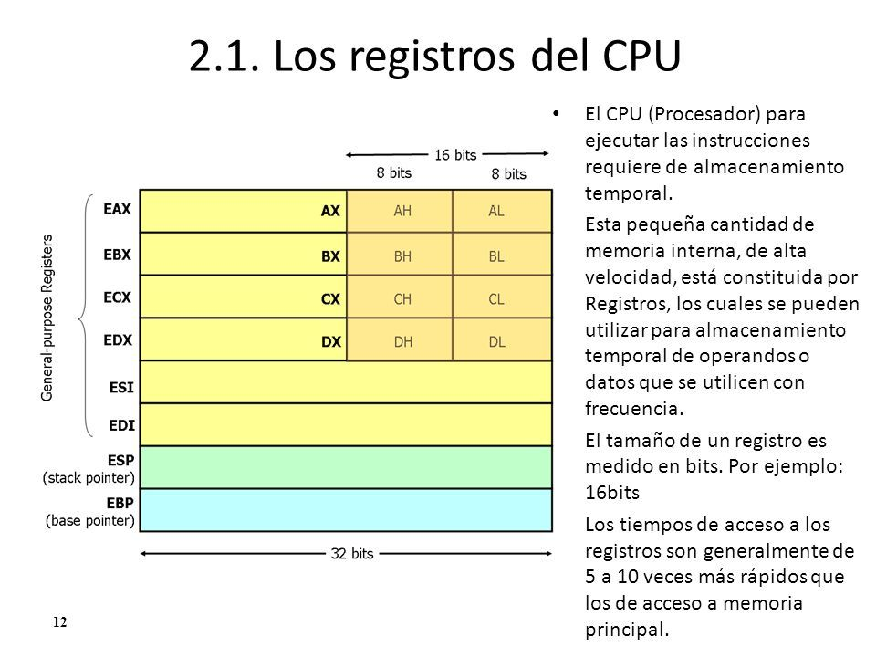

¿Qué es un registro?
Un registro es una memoria que esta ubicada en el procesador y se encuentra en el nivel más alto en la jerarquía de memoria, por lo tanto tiene una alta velocidad pero con poca capacidad para almacenar datos que va desde los 4 bits hasta los 64 bits dependiendo del procesador que se utilice. Los datos que almacena son los que se usan frecuentemente.
También hay tipos de registros y se dividen en dos categorías:
Registros visibles al usuario
Son aquellos que pueden ser referenciado por medio del lenguaje maquina que ejecuta la CPU, los registro que normalmente disponibles son:
Registros de control y de estado
Se utilizan para controlar las operaciones del procesador, la mayor parte de estos registros no son visibles al usuario y algunos pueden ser accesibles a las instrucciones de maquina ejecutadas en un modo de control.
Los registros utilizados son los siguientes:
Ejemplos de organización de registros de CPU reales
En algún diseño concreto de procesador es posible encontrar otros registros relativos a estado y control. Puede existir un puntero a un bloque de memoria que contenga información de estado adicional (por ejemplo, bloques de control de procesos). En las máquinas que usan interrupciones vectorizadas puede existir un registro de vector de interrupción. Si se utiliza una pila para llevar a cabo ciertas funciones (por ejemplo, llamada a subrutina), se necesita un puntero de pila del sistema. En un sistema de memoria virtual se usa un puntero a la tabla de páginas.Por último, pueden emplearse registros para el control de operaciones de E/S. En el diseño de la organización de los registros de control y estado entran en juego varios factores.
Una cuestión primordial es el soporte del sistema operativo. Algunos tipos de información de control son de utilidad específica para el sistema operativo. Si el diseñador del procesador posee una comprensión funcional del sistema operativo que se va a utilizar, la organización de los registros puede adaptarse hasta cierto punto a ese sistema operativo.
Otra decisión importante en el diseño es la distribución de información de control entre registros y memoria. Es frecuente dedicar los primeros (más bajos) pocos cientos o miles de palabras de memoria para fines de control. El diseñador debe decidir cuánta información de control debiera estar en registros y cuánta en memoria. Se presenta el compromiso habitual entre coste y velocidad.